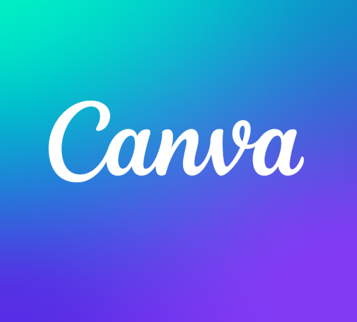

É o meu favorito porque nele encontro a resposta para
minhas perguntas, conselhos da Bíblia, ajudas práticas,
além de ser uma fonte confiável de informações.

Uso muito no dia a dia para criar apresentações profissionais
de forma simples e rápida. Gosto da disponibilidade
de modelos elegantes e ícones.
Desde ouvir músicas à estudar, aprender receitas e
desenvolver novos hobbies, é muito útil!
Oferece uma biblioteca de textos técnicos de Universidades
reconhecidas, já me ajudou muito em estudos relacionados à
robótica, e algumas olimpíadas do conhecimento.
Permite um aprendizado fácil e interativo com ótimos professores
e aulas muito bem organizadas e apresentadas. Por meio dele consigo
aumentar diariamente meu conhecimento sobre Desenvolvimento de
Sistemas e as demais tecnologias.